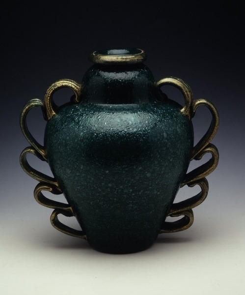
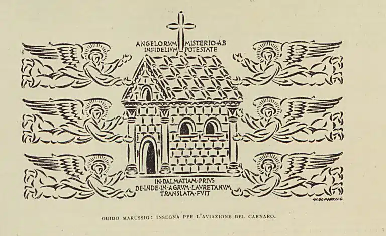
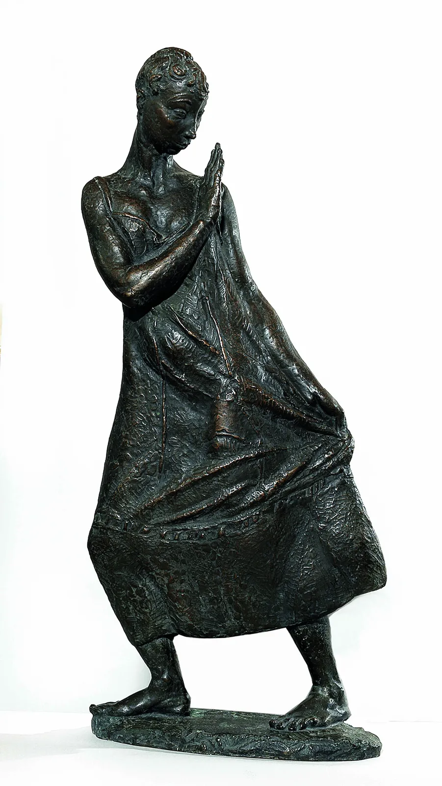
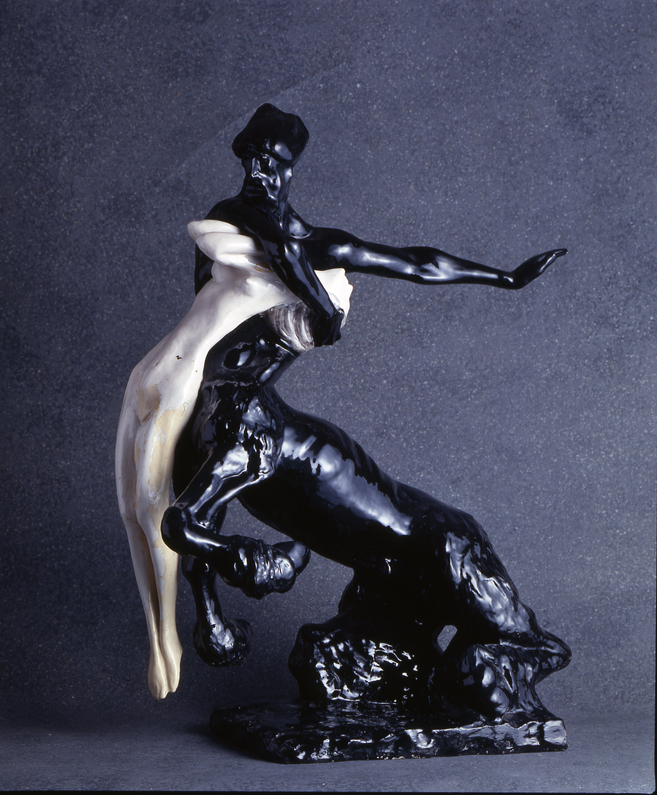
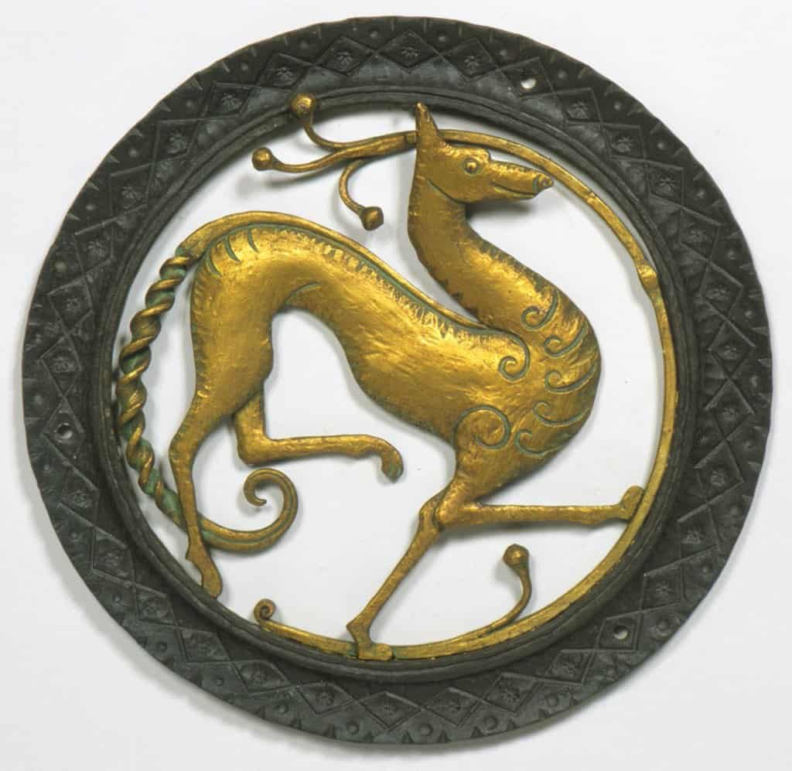
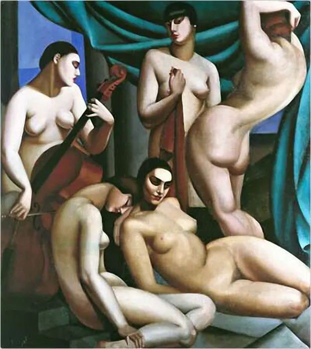
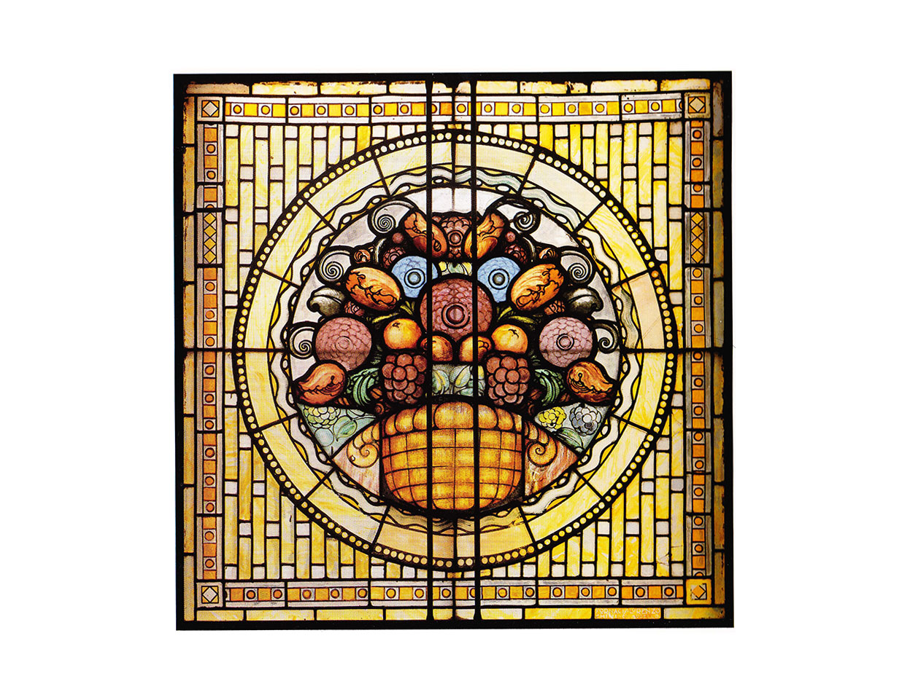
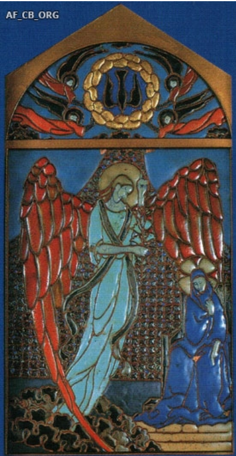

MATERIALI E TECNICHE
Dal vetro muranese ai ferri battuti, ogni materia racconta un saper fare. Scegli una scheda per scoprire storia, tecniche e protagonisti di ciascuna arte decorativa del periodo dannunziano.

Vetro muranese
Soffio, colore e trasparenza tra Murano e il gusto Déco.

Disegni e stampe
Manifesti, illustrazioni e l'arte applicata alla carta.

Bronzi
Linee geometriche e facciate del nuovo gusto decorativo.

Ceramiche artistiche
Smalti, forme e botteghe della ceramica decorativa.

Tessili e tappezzerie
Motivi geometrici e materie pregiate per l'arredo.

Ferri battuti
La maestria del fabbro tra cancellate e oggetti d'arte.

Dipinti
Tele e ritratti tra simbolismo e atmosfere dannunziane.

Vetrate
Composizioni luminose per finestre e lucernari.

Smalti
Colore vetrificato su metallo, tra preziosità e dettaglio.